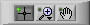
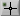
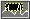
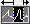
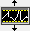
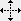
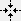

To zoom in or out or to move the view to an area not visible in a graph or chart, right-click the graph or chart and select Visible Items»Graph Palette to display the graph palette, shown in the following image.
 | Note You also can click  to move the cursor on a graph. |
Click , and select from the following images to zoom in or out.
|  | Zooms in an area of the graph or chart. |
|  | Zooms in an area of the graph or chart on the x-axis. |
|  | Zooms in an area of the graph or chart on the y-axis. |
Zooms in or out to autoscale the graph or chart. |
|
|  | Zooms in. Hold <Shift> to zoom out while you are zooming in, and release <Shift> to zoom in again. |
|  | Zooms out. Hold <Shift> to zoom in while you are zooming out, and release <Shift> to zoom out again. |
Complete the following steps to move the view to an area not visible in the graph or chart.